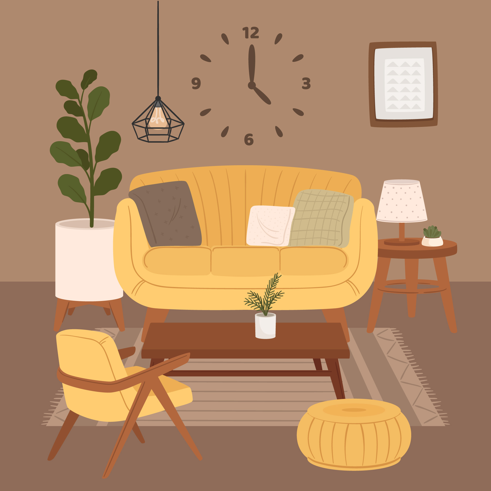

Réseau social PHP
Développement d'un réseau social avec PHP qui a été baptiser Gollum Book, pour les fans des films: "Le Seigneurs des Anneaux". Projet dont je suis la plus fière :) d'une duré de sept jours équipe composée de trois personnes. Premier projet PHP qui s'est fait dans un premier temps en mob programming, puis répartition des tâches.
Extension de Navigateur (Chrome)
Développement from scratch d'une extension de navigateur en JavaScript contenant une loupe et d'un mode sombre afin d'avoir une meilleur lisibilité pour les personnes mal voyantes. Le projet a duré deux semaines en groupe de trois personnes.

Plateforme de vente de meuble
Développement from scratch d'un site web (type le Bon Coin) d’un magasin de meubles, selon les demandes du client. Sur lequel des utilisateurs s’inscrivent et interagissent avec le stock. Il y a différents types d’utilisateurs, donc des droits différents users/admin. Le projet a duré deux semaines en groupe de neuf personnes séparé en deux équipes. Une qui a commencé sur le front-end et l’autre sur le back-end, puis les deux équipes ont inversé leurs rôles à la fin de la première semaine.

DATAVIZ
Développement from scratch d'un site web sur le nombre de passages de vélos à Nantes : récupération de plusieurs API sur Nantes Métropole et affichage des données sur un navigateur. Travail en équipe de trois avec répartition des tâches sur le html et css, et pair programming pour les requête à une API.
PICO-8
Développement from scratch d'un jeu vidéo 2D en rapport avec Noël, le but du jeu est d'aidé le père noël à lancer le plus de cadeaux dans les cheminées (augmentation du score), tout en évitant les nuages et les oiseaux (perte de vies). Le Projet a duré deux semaines en groupe de trois personnes.